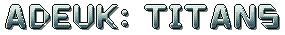
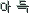

01 360° orbital combat
No floor, no walls. Titans drift, dash and circle each other through open space with real weight and momentum. Tilt the stick before a blow to choose where it lands: above, ahead or below.

Play free
아득 (adeuk) so far away that distance becomes a feeling.
Cosmic titans. Every pixel is matter.
Colossi the size of worlds circle each other in the dark between galaxies and tear each other apart, pixel by pixel. No health bars: your body is the bar. One of them was built from the wreck of two murdered worlds, and it is hunting.
I · 두 세계
Once there were two worlds,
close enough to see each other's lights.
They traded, argued, married across the gap. For a very long time, nothing out here noticed them.
II · 눈
Then something
looked at them.
An eye the size of a nebula opened in the dark. Where its gaze fell, the crust split and the seas boiled off.
III · 입
Then something came to eat.
It came along the edge of the dark, and it did not stop until half a world was gone.
IV · 잔해
Two burning hearts.
A sea of wreckage.
And in the wreckage, against all odds, people still alive. Arks, engines, the last cities that could still burn.
V · 조립
They did not run.
They built.
Every ark, every engine, every slab of their old continents, hauled in and welded around the two dead hearts. A body made of despair, because despair was all there was left to build with.
VI · 우리
They named it 우리.
We.
Two worlds, one body, everyone left. One last fighting chance, and someone to answer for what was done.
VII · 사냥
Now it drifts between the galaxies,
hunting a hungry mouth and an angry eye.
Planets, stars, black holes: whatever stands in its way, it goes through.
크기
게임
Every titan is a body of simulated pixel matter. Damage doesn't drain a bar: it cracks, burns, infects, crushes or devours the actual pixels, each titan in its own way. A round leaves both bodies carved and the arena littered with what came off them.
No floor, no walls. Titans drift, dash and circle each other through open space with real weight and momentum. Tilt the stick before a blow to choose where it lands: above, ahead or below.
Wounds crack, hold, then shear off as slabs that tumble away. Lose matter and you get lighter and faster, but weaker; damaged regions hit softer, so carve toward the core.
Novae, gravity wells, tidal streams and beams that cross the whole screen. Ultimates fill from dealing and taking damage, so the comeback is always one blow away.
The game has screen-wide flashes and camera shake; Options has comfort sliders and a one-press Reduced motion preset.
A procedural score that swells with the fight, and huge, dramatic impacts. Every sound is synthesised live in your browser: nothing is downloaded, not even the Hangeul font.
// under the hood 속
거인들
Eight colossi, eight ways to destroy matter, and each one is a single idea grown to the size of a world. Hover or tap a titan to see it fight.
가장자리
Hunger. Devours. Ends. Repeats.
It does not enter the arena. It is the edge of the arena. What you will see is the feeding end. The rest of it does not fit on any screen.
Be there when it opens장면
Straight from the game at its true 640×360, every pixel shown as a crisp square.
조작
Best with a gamepad: Switch Pro Controller, Joy-Con, Xbox or PlayStation, no driver needed. Press any button on the page once so the browser shows it to the game. Everything is remappable on the in-game Controller Check.
| Action | Switch Pro | Xbox | PlayStation |
|---|---|---|---|
| Move and aim | Left stick / D-pad | ||
| Strike | Y | X | □ |
| Crush | X | Y | △ |
| Surge | B | A | ✕ |
| Signature | A | B | ○ |
| Ultimate | ZR | RT | R2 |
| Guard | ZL | LT | L2 |
| Feint | L | LB | L1 |
| Gravity | R | RB | R1 |
| Pause | + | Menu | Options |
| Action | Player 1 | Player 2 |
|---|---|---|
| Move and aim | WASD | Arrow keys |
| Strike | J | Num 4 |
| Crush | I | Num 8 |
| Surge | K | Num 2 |
| Signature | L | Num 6 |
| Ultimate | O | Num 9 |
| Guard | Shift / Space | Num 0 |
| Feint | Q / E | Num 7 / Num 1 |
| Pause | Esc | Enter |
Menus: arrows or WASD, Space / Enter to confirm, Esc to go back. Player 2 needs a numpad.
Photosensitivity: the game contains screen-wide flashes and camera shake. Options → Screen shake and Flash effects turn them down; Reduced motion sets both to 25 %. No touch controls yet: phones need a pad or keyboard.
보도 자료
ADEUK: TITANS is a cosmic pixel-art fighting game for the browser in which colossal entities, a planet, a black hole, a supernova, a living lattice and stranger things, physically wear each other down. There is no health bar: every titan's body is a map of simulated pixel matter, and every blow cracks, burns, infects, crushes or devours the actual pixels in the attacker's own way. Wounds crack, hold and shear off as slabs; the fighters grow lighter, faster and weaker as they come apart. Every sprite, sound and font is generated in code.
New titans, the final boss, and when the next arena opens. No spam, ever.